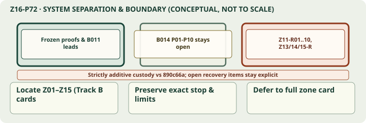

Z16-P72 · Field reference atlas · Adapted historical material
Historical Track B Lineage and Open Recovery Register Index
Locate the original encyclopedia cards for historical Track B Lineage and Open Recovery Register Index.
When it applies · Offline reference lookup. The linked chapter defines the situation, audience and limits.
Equipment · Offline reader or the complete linked source cards in print.

Actions
- Open Z11-R01 for write a route plan and overdue handoff before departure; Z11-R10 for assign group navigation roles and emergency accountability.[A10, E01, E11]
- Open Z13-R03 for check carbon monoxide alarms before an outage; Z14-R01 for match preservation plans to tested recipes; Z15-R03 for track cold food during a power outage.[A10, C09, F06, F04]
- Read the linked card’s applicability, equipment and stop conditions together. Keep review and source limitations attached to any excerpt.[A10, ED]
Failure recognition · Acting on a keyword or title while overlooking an upstream exception or stop condition.[A10, ED]
Verify · Confirm the exact page ID and read the full conditions before using the reference.[A10, ED]
Stop or change course · If the situation falls outside a linked card’s conditions or its stop rule applies, stop using this index as a decision aid. Follow the full card and current local directions.[A10, ED]
Evidence and editorial notes
- A10 · FEMA / Ready.gov · Make a Plan (current web edition)
- Section: Offline reader navigation, historical lineage, and HOLD transparency · Conditions: Using the complete 16-zone offline archive, zone readers, and print proofs
Support: Navigation aids expose draft status, reconstruction lineage, open diagnostic photo needs, and pending specialist holds on every lookup path.
Limitations: This index entry does not independently establish any safety, regulatory or diagnostic instruction. · Conflicting evidence: None noted.
Editorial note: Index design and cross-reference policy. Substantive directions come from linked upstream chapter claims. · Specialist reviewer: Accessibility, print QA, and editorial reviewer
Primary source · checked 2026-11-24 - C09 · CPSC · CO Alarms (current web edition)
- Section: Installing and maintaining CO alarms · Conditions: U.S. household CO prevention
Support: Install CO alarms on every level and outside sleeping areas. Follow placement and maintenance instructions.
Limitations: Alarms alert to buildup after release begins; they never make indoor fuel-burning appliances safe. · Conflicting evidence: None; complements C05 and C06.
Editorial note: Paired with exit-plan checks in household and shelter cards. · Specialist reviewer: Carbon monoxide safety
Primary source · checked 2026-11-24 - E01 · Minnesota DNR · Safety in State Forests (current web edition)
- Section: Before your trip and while visiting · Conditions: State-forest travel and backcountry planning
Support: Know the route, check conditions, carry navigation and safety equipment and share trip details.
Limitations: Conditions and trail maintenance vary seasonally across forest units. · Conflicting evidence: None; aligns with NPS-H.
Editorial note: Foundation for trip planning and pre-departure risk checks. · Specialist reviewer: Land management and search and rescue
Primary source · checked 2026-11-24 - E11 · NPS · Hike Smart (current web edition)
- Section: Plan your hike; Stay together · Conditions: Groups on hiking routes
Support: Choose a route suited to the group's abilities and hike at a pace that keeps the group together.
Limitations: Fast hikers moving ahead at junctions is a leading driver of preventable separation. · Conflicting evidence: None; aligns with SAR prevention principles.
Editorial note: Core reference for group accountability and pacing cards. · Specialist reviewer: Group leaders and search and rescue
Primary source · checked 2026-11-24 - F04 · USDA / FDA / CDC · Food Safety During Power Outage (current web edition)
- Section: Refrigerated food and power outages · Conditions: Refrigerator starts cold; keep door closed
Support: An unopened refrigerator keeps food cold for about four hours. Follow the per-item discard chart after loss of temperature control. Never taste to test.
Limitations: Door openings accelerate warming; appliance thermometer is needed to verify temperature. · Conflicting evidence: None; retained for Z15 reconstruction.
Editorial note: Maintains five-pack integrity. · Specialist reviewer: Food safety and household preparedness
Primary source · checked 2026-11-24 - F06 · NCHFP · Ensuring Safe Canned Foods (online reference)
- Section: Ensuring safe canned foods > Acidity and processing methods · Conditions: Tested home-canning recipe and equipment
Support: Low-acid foods require an applicable tested pressure-canning process; acid foods use the tested process for that recipe.
Limitations: Untested modifications can permit Clostridium botulinum survival. · Conflicting evidence: None; retained for Z14 reconstruction.
Editorial note: Maintains five-pack integrity. · Specialist reviewer: Food preservation and public health
Primary source · checked 2026-11-24
Source lineage · Adapted historical material (B003/B011 crosswalk & Track B lineage) · Classification · Adapted historical material.